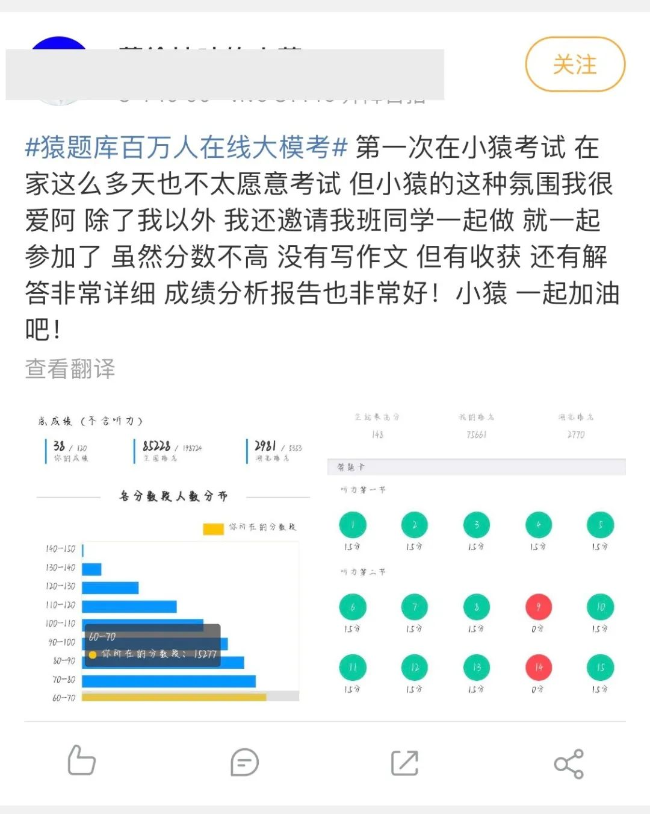
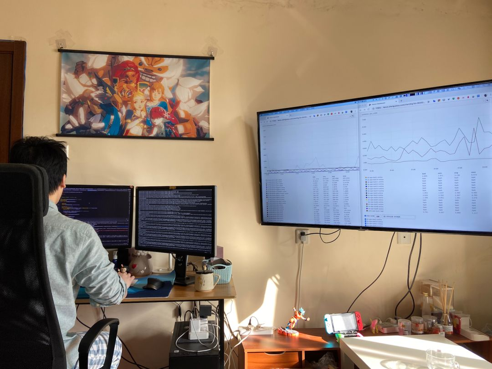

1.8亿中小学生，最挑剔的他们到底想要怎样的直播课？
原文链接 备份链接 2020年春天，一场突如其来蔓延全国的新冠肺炎疫情，让这个时期变得特殊，在家学习成为主流的方式。老师纷纷变成主播，家长不得不成为督学。 然而，在线直播课究竟该如何上？很多人还是懵的。老师花式「翻车」、学生强撑精神的背 …
全文共4060字，阅读大约需要10分钟。
此刻，这所闻名川渝的学校空空荡荡，数千名高中生仍四散在家中，等待着返校时间的确定。然而，对于分秒必争的高三学生而言，返校时间不断延后，学习和竞争却不会停歇。
这场“停课不停学”的全民战“疫”中，至关重要的仍是学生自主地“学”，这极大考验着他们在终身学习中的自主能动性。
文 | 陈淼
返校延期后，“停课不停学”的广大师生面临更加复杂的教育环境，形式的变化、时间和空间的变化连连相击，承受升学压力的中、高考学子也在逆风中酝酿着绝地反击。
北京新高考元年，首次适应性测试的考场设在线上。3月3日，5万余名高三学子居家“云”开考。
同样备战高考的李林蔚身居成都，对这种方式并未感觉措手不及。此前，他已使用猿题库App参加过多次在线模考，熟悉这种特定的考试情景和心理状态。
01
2月15日，原是成都七中林荫校区开学的日子。
一场疫情按下了暂停键。此刻，这所闻名川渝的学校空空荡荡，数千名高中生仍四散在家中，等待着返校时间的确定。
然而，对于分秒必争的高三学生而言，返校时间不断延后，学习和竞争却不会停歇。
这天下午两点，高三学生李林蔚准时坐在家里的书桌前，眼前一方手机屏幕上，是假期后的第一场考试。他对此格外重视——与在校时不同的是，他的竞争对手并非同校学生，而来自全国各地。这是一场由猿辅导在线教育旗下猿题库App发起的初高考英语模拟考试，全国共有123万学生报名参与。同时，平台还会针对每个人的错题点、薄弱点进行分析，提供一份智能诊断报告，便于学生查漏补缺。
提交试卷后5分钟，李林蔚收到了自己的成绩——146分，全国排名第9名，与第一名仅差2分。他言语间透着轻松，“从高一到现在，我一直都参加，但这次考得最好。”事实上，相比于名次，李林蔚更看重这场模考暴露出的问题，“主要收获就是查缺补漏”。
与此同时，在距离成都近2000公里的安徽省宣城市，一所县城中学的高三学生吴越，和李林蔚出现在了同一个“云考场”。
“全国模考的排名范围更广，给我提供了不同的维度来评估自己的学习水平。”吴越也已经是猿题库线上模考的熟面孔，“我参加过好几次模考了，每次的排名有升有降，这给我提供了一个参考指标，来检测一个阶段的学习状况有无进步。”此外，智能分析报告则为吴越提供了“对症下药”的可能性。

考试结束后，吴越在手机上查看“猿题库百万人在线模考”成绩报告及错题解析
比起这场“火”起来的模考，猿题库的老用户们更青睐它的刷题功能，这也正是这个在线教育App为人熟知的首要原因。
早在初中时期，吴越偶然在手机应用商店看到了猿题库，被简洁的界面风格所吸引。不久后，它就成为了吴越的“宝藏软件”——在校时间，他每天会抽出半个小时，有针对性地使用猿题库搜索往年的高考真题，或最新的模拟题。此外，如果遇到自己不懂的难题，他也会在猿题库上搜索大量同类型题目进行巩固练习。
李林蔚也有着相似的体验，“猿题库刷题的效率很高，解析里的解题思路也很详细。”不同的是，李林蔚还下载了老师版的猿题库，“老师版可以把数学的选填题难度从高到低排，挑几个有难度的尝试攻克。”
延期开学期间，长期在家的吴越有了更多的自主学习时间，明显增加了猿题库的使用频率。他讶异于线上题库对他的深度了解，“我可以针对自己的情况制定试卷，而题库也会根据我的答题情况进行数据分析和智能推荐。”

停课期间，吴越每天都在猿题库App上练习由系统为自己推荐的题目
吴越不知道的是，手中这个题库之所以如此“懂”他，是因为经历了近乎严苛的筛选——50选1，猿题库现在的数百万道题是这么挑出来的。
筛选过程从线下开始。它不是将纸上的题库简单搬到网上，而是由专业老师一一精选，题目不能有错，且要准确。
入库不是终点，至今已累计7亿次的做题数据也能帮助筛选。猿题库运用动态分析算法，做题时长、准确率都可以使系统更好地分析学生的实际能力，及时调整题目参数、优化题库，实现动态、有针对性地推荐当下最适合的题目，更高效地帮助学生查漏补缺。如果一道题是多数学生都会做错的，系统便会自动提升它的难度系数，并推荐给做题能力更强的用户。
伴随着在家学习的时间不断延长，吴越察觉到，父母和老师对于线上教育平台难免有些顾虑，“主要是担心学生在接触网上产品时，不能专心学习，反而借着学习的名义做其他的事。”
他坦言，这取决于个人的自制力，“如果是学习自主性比较强的学生，的确能通过这些线上产品接触到更好的教学资源，包括教师资源和模拟试题等。”
02
早上6点20分，窗外天光未亮，胡成龙准时上线打卡，开始一天的教学工作。
身为湖北省襄阳市南漳一中的一名高三班主任，胡成龙近日倍感压力——疫情使返校时间不断延后，家长们的焦虑情绪正不断蔓延。
如何让“停课不停学”高效落地，成为了教师们急需解决的问题。尽管学校迅速制定了线上学习的模式——从2月5日开始，两天上课、两天考试穿插进行，但仓促上阵的效果明显不尽如人意。
“我们班一共78个人，但经常只有60个学生签到。”胡成龙发现，除了学生的主动性存在问题，习惯了课堂教学的老师们同样一头雾水：线上课程要怎么上，又到哪里去上？作业该如何布置，又如何批改？
这时，胡成龙想到了自己从2016年就开始使用的猿题库。彼时，首次带毕业班的他为了提升教学能力，增加题目的积累，下载了学生版的猿题库，“当时是抱着试一试的态度，用了一段时间后发现效果不错。”自那以后，他也常常给学生推荐这个软件。
面对延期返校，胡成龙下载了老师版的猿题库，教自己班里的学生如何使用，“有这样一个平台，既方便学生做题，也方便我批改。”
渐渐的，猿题库成为了“云课堂”的有效辅助工具，胡成龙也摸索出了一套自己的教学模式。目前，在他的班上，猿题库发挥的功能分为三部分：一是让学生按照章节刷题；二是利用猿题库将线下试卷转为线上试卷，教师在线上进行批改；三则是每天早上给学生布置一道大题，利用猿题库的答题名单，教师能迅速统计出大体情况。
效果慢慢呈现出来。胡成龙发现，班上有几名“老大难”学生有了变化，“有四五名学生，原本在学校里经常不能按时交作业，现在改成线上作业后，加上有父母的监督，他们的学习态度明显好了很多。”
在胡成龙看来，这与家长的有效监督不无关系，也和软件的及时反馈功能有关——题库类App将学习过程拆解成一个个小任务，学生每完成任务便可获得即时反馈和奖励。比如在猿题库中是“拿香蕉“，每个章节有5根“香蕉”，刷够题后香蕉就会变成黄色，这甚至已经成为很多学生的口头禅——你今天拿了几根香蕉？

猿题库会根据用户情况等动态调整难度系数，形成智能推荐，并在学生完成答题后给予即时反馈
因此，胡成龙时常鼓励学生，“如果你们把总复习的25根香蕉刷满，到学校后，在高考场上，你也能尝到真实的甜头。”
很快，南漳一中高三年级的其他老师们也看到了猿题库的优势，纷纷将这个软件带进了自己的“云课堂”。胡成龙的妻子是高一年级的一名教师，看见猿题库在高三年级的使用效果之后，她也开始尝试使用，并推荐给了自己的同事们。
此外，在高三年级的群里，猿辅导免费直播的课表也被迅速转发，“让学生自主安排时间去看。”胡成龙称。
但是，胡成龙也意识到，这场“停课不停学”的全民战“疫”中，至关重要的仍是学生自主地“学”，这极大考验着他们在终身学习中的自主能动性。
所以，他依然盼望能尽快开学，“越早对学生越有利。”
03
在这个特殊时期，学生和教师都迅速向线上“转身”。
据公开数据显示，自学神器猿题库、小猿搜题等日活暴涨；视频通讯类工具钉钉、腾讯会议等被小学生祭出“一星好评”。很多在线教育产品的增长曲线急速爬坡，迎来“Aha Moment”——被“美国增长黑客之父”肖恩·埃利斯定义为产品的高光时刻——用户真正发现产品的核心价值，并被迅速占据心智，成为产品的“自来水”。
2月15日的一场“在线大模考”，创下百万中学生同时参与的突破性纪录。时隔近两周，第二期模考上线，再度引发热议，#现在的孩子已经开始云考试了#登上微博热搜。

模考结束，学生纷纷在微博上晒成绩，并直言这场“云考试”炸出了自己不会的知识点
这一切显得突然，却又似乎在猿题库、小猿搜题负责人Annie的意料之中，“自学刷题，本身就是刚需。而这次因返校延期，自学的重要性凸显出来，需求得以更大的释放。”
在线教育行业的发展以刚需和市场规模为基础。自然流量极速涌入线上，高并发量对行业也是一场考验，很多平台甚至已经精确到以天为单位去完成需求的迭代。尽管业内对于正式开学后留存量的变化有所预期，但Annie认为，“不一样的是，这次的确涌入了很多没有体验过猿题库的新用户，我们也有信心留住他们。”
信心一方面来自于师生常年的肯定，“猿题库几年来都几乎没有花钱进行市场推广，而主要通过师生之间的口口相传，它的确可以提升教学效率，也可以为学生提供一个高质量的练习场景。”
数据则更为直观——据猿题库统计，在省市级别的重点中学中，每一个学生都在使用猿题库App；使用猿题库的学生超过1000人的学校已达7553所。不仅如此，这些学生平均每天在猿题库上做33道题，其中近20%的学生做题时间超过40分钟。
而另一方面，源自猿题库本身的定位。回望成立之初，尽管其个性化越来越明显，定位与属性却从未改变。

一场场看似无人监考的“云考试”，背后有着程序员、黑科技的坚实保障
Annie常常在接受采访时被问到，“为什么小猿搜题、猿题库、猿辅导这些产品不合并在一起？”——将各种产品放在一个平面，这显然是在线教育公司的“主流”路径。
但团队有着更为长远的考虑，“猿辅导在线教育公司有着不同的产品矩阵，每个产品对应的是不同的定位和应用场景，拿猿题库来说，坚守的其实就是练习、备考场景，小猿搜题的定位是提供解题方法，为学生即时答疑，而猿辅导直播课则是系统性地通过课程带领学生学习……”Annie认为，正是因为有这些产品矩阵，每个产品有清晰的定位，才能把这一个场景做到最好，不会被市场吞没。
居家学习中的脱颖而出，验证了这个选择的正确性。
“这么多年，猿题库一直在自己适用的场景里深化优势，以及无可取代的价值。也正因此，猿题库这次才会在师生里取得这么大的反响。”Annie称。
但她并不认为这段特殊时期是一场冲刺，因为“教育本来就是一个长期的事情。”时间倒回2013年，彼时的猿辅导在线教育公司正式进入K12领域，两年后，用户达到数千万，再到如今突破4亿，“7年过去了，其实这是一个很慢的过程，需要日积月累用户和口碑，然后才能形成品牌效应。”
至于未来如何，Annie说，“尽管这是件很慢的事情，但我们也将保持更强的耐心与坚守。”
（专题）
原文链接 备份链接 2020年春天，一场突如其来蔓延全国的新冠肺炎疫情，让这个时期变得特殊，在家学习成为主流的方式。老师纷纷变成主播，家长不得不成为督学。 然而，在线直播课究竟该如何上？很多人还是懵的。老师花式「翻车」、学生强撑精神的背 …
原文链接 备份链接 大学的意义，不仅仅在于一节节课程，还在于学校提供的各种公共教学设施和公共生活空间。学生们身体的不在场，不可避免地让大学的意义变得模糊。 文 | 田蔚琪 陈星萌 林浩瑶 编辑 | 小豆 二月底本是澳洲大学秋季开学的日子， …
原文链接 备份链接 澎湃新闻记者 栾晓娜 2020年2月18日下午2:00，上海举行新闻发布会，邀请市教委主任陆靖，上海交通大学常务副校长、中国科学院院士丁奎岭，市卫生健康委新闻发言人郑锦，长宁区绿苑小学校长王晶介绍上海新冠肺炎疫情防控 …
原文链接 备份链接 “有一次我突击去检查孩子的网课情况，发现她网课是在播放，但是电脑桌面当前窗口显示的却是她的QQ群，原来一群同学正聊得欢。” 记者|王晓珊 编辑| 盛倩玉 小豆 实习生| 甘笠男 刘苗苗 龚纾绮 “咋出来的不是云课堂？难 …
原文链接 备份链接 如何在老师与学生之间、学生之间相互不见面的情况下， “保证在线学习与线下课堂教学质量实质等效”？首先需要申明：我说这是个好问题，不是说我对于这个问题有个有把握的、确定准确的答案，而是说这个问题能够引发一系列关于高等教育 …